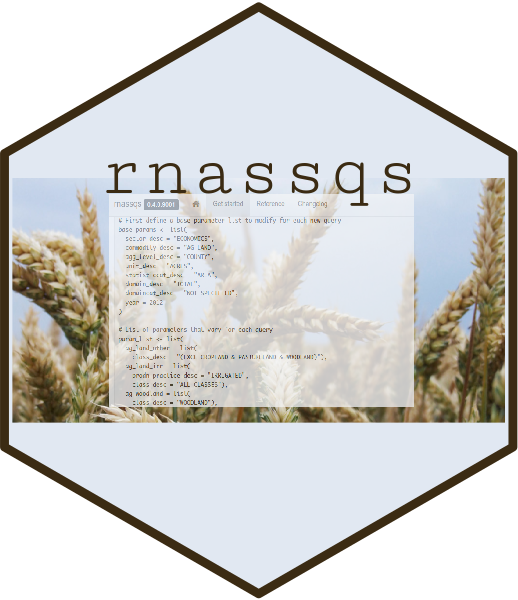

Nov 26, 2019
rOpenSci HQ
- NumFOCUS recognizes Melina Vidoni and Will Landau for their contributions to rOpenSci. Read the blog post
- Join us for our next Community Call - Last Night, Testing Saved my Life - on December 5th, 2019, with Steffi LaZerte and Rich FitzJohn.
Software 📦
CRAN:  GitHub:
GitHub: 
New Packages
- The first version (
v0.1) oflightris on CRAN - read spectrometric data and metadata. Checkout the docs to get started.

- The first version (
v2.0.3) ofmauriceris on CRAN - install BEAST2 packages. Checkout the docs to get started.
New Versions
- A new version (
v0.3.0) ofphylocomris on CRAN - Interface to Phylocom for analysis of phylogenetic community structure and character evolution. See the release notes for changes. Checkout the vignette to get started.
now always use temp files even when users pass files to avoid altering user files; new manual file describing inputs; check taxon name case in all inputs
- A new version (
v1.2.9) ofUCSCXenaToolsis on CRAN - download and explore datasets from UCSC Xena data hubs. See the release notes for changes. Checkout the docs to get started. - A new version (
v0.4.12) ofiheatmapris on CRAN - Interactive and complex heatmaps. See the release notes for changes. Checkout the docs to get started.
adjust tests to be compatible with newer version of scales package
- A new version (
v0.4.1) ofstplanris on CRAN - sustainable transport planning. See the release notes for changes. Checkout the docs to get started.
better error messages if
od2line()fails due to non-matching ids; improved documentation ofod2line()in the vignette - A new version (
v1.0.15) oflingtypologyis on CRAN - linguistic typology and mapping. See the release notes for changes. Checkout the docs to get started.
remove
NAapearence from popup window when “fake” language argument is used; fast fix of colors tests - A new version (
v0.2.3) oftileris on CRAN - generate geographic and non-geographic map tiles from R. See the release notes for changes. Checkout the docs to get started.
precompile vignette that depends on external data
- A new version (
v2.0) ofskimris on CRAN - compact and flexible summaries of data. See the release notes for changes. Checkout the vignettes to get started.
a complete re-write! check out the release notes for all the details 🎉
- A new version (
v0.9.5) ofrnoaais on CRAN - NOAA Weather Data from R. See the release notes for changes. Checkout the vignettes to get started.
lcd()base url fixed (please upgrade if you use lcd data); allgefsfunctions temporarily defunct - A new version (
v0.2.0) ofgit2rdatais on CRAN - store and retrieve data.frames in a Git repository. See the release notes for changes. Checkout the docs to get started.
a number of breaking changes, and some new features
- A new version (
v1.1.3) ofnasapoweris on CRAN - NASA POWER API Client. See the release notes for changes. Checkout the docs to get started.
new vignette “Using nasapower with large geographic areas”
- A new version (
v0.9.91) oftaxizeis on CRAN - taxonomic toolbelt for R. See the release notes for changes. Checkout the taxize book to get started.
get_idscan now suppress package cli messages; many improvements and bug fixes; force HTTP/1.1 for NCBI; warn when taxon identifiers of class X don’t matchdbparam value; beware: COL now rate limits - A new version (
v0.4.0) ofnodbiis on CRAN - the NoSQL database connector. See the release notes for changes. Checkout the README to get started.
in
docdb_query()anddocdb_get()for sqlite use a connection instead of file path; fix todocdb_query()anddocdb_create()for sqlite when handling mixed value types
Software Review ✔
We accept community contributed packages via our software review system - an open software review system, sorta like scholarly paper review, but way better. We’ll highlight newly onboarded packages here. A huge thanks to our reviewers, who do a lot of work reviewing (see the blog post on our review system), and the authors of the packages!
If you want to be a reviewer fill out this short form, and we’ll ping you when there’s a submission that fits in your area of expertise.
The following package recently went through our software review process and has been approved:
- baRcodeR > Label Creation for Tracking and Collecting Data from Biological Samples
- Author: Yihan Wu
- Issue: ropensci/onboarding#338
- Reviewers:
On the blog
Nicholas Potter wrote about his recently approved package rnassqs for accessing USDA agricultural data: rnassqs: accessing USDA agricultural data via API

Vikram Baliga wrote about his recently approved package workloopR - Analysis of work loops and other data from muscle physiology experiments in R

Use Cases
The following 12 works use/cite rOpenSci software:
- Fecchio et al. used MODISTools in their paper An inverse latitudinal gradient in infection probability and phylogenetic diversity for Leucocytozoon blood parasites in New World birds 1
- Scheffers et al. used rredlist in their paper Global wildlife trade across the tree of life 2
- Enkybayar et al. used rplos in their paper Comparing public and private Facebook activity linking to PLOS ONE papers 3
- Lewinski & Hasan used pdftools in their paper Russian Troll Account Classification with Twitter and Facebook Data 4
- Dumitrescu et al. used rnoaa in their paper Homogenization of a combined hourly air temperature dataset over Romania 5
- Yoo et al. used MODIStsp in their paper The use of MODIS atmospheric products to estimate cooling degree days at weather stations in South and North Korea (https://doi.org/10.5532/KJAFM.2019.21.2.97) 6
- Kaaronen & Strelkovskii used nlrx in their paper Cultural Evolution of Sustainable Behaviours: Pro-Environmental Tipping Points in an Agent-Based Model 7
- Sydenham et al. used taxize in their paper When context matters: Spatial prediction models of environmental conditions can identify target areas for wild bee habitat management interventions 8
- Bottin et al. used taxize in their paper Phytosociological data and herbarium collections show congruent large scale patterns but differ in their local descriptions of community composition 9
- Piatscheck used rgbif and spocc and rinat in their paper Past, present and future: Geographic and temporal variation in a Fig–fig wasp mutualism 10
- Reyes et al. used iheatmapr in their paper GENAVi: a shiny web application for gene expression normalization, analysis and visualization 11
- Fetter used rotl in their paper Natural Selection For Disease Resistance In Hybrid Poplars Targets Stomatal Patterning Traits And Regulatory Genes 12
Call For Maintainers
Part of the mission of rOpenSci is making sustainable software that users can rely on. Some software maintainers need to give up maintenance due to a variety of circumstances. When that happens we try to find new maintainers. Checkout our Contributing Guide for why and how to contribute to rOpenSci.
We’ve had six recent examples of maintainer transitions within rOpenSci:
- RSelenium: now maintained by Ju Kim
- chromer: now maintained by Paula Andrea
- qualtRics: now maintained by Julia Silge
- rsnps: now maintained by Julia Gustavsen and Sina Rüeger
- rdpla: now maintained by Alyssa Columbus
- webchem: now maintained by Erik Sapper
- mregions: in process of moving to maintainance by VLIZ
We don’t have any packages looking for new maintainers - if you are a maintainer and want to hand over that role to someone else get in touch with us.
Keep up with rOpenSci
- Mailing list: Sign up with an email address to get this newsletter sent to your inbox -> ropensci.org/#subscribe
- Alternatively, you can subscribe to this newsletter via our XML feed at https://news.ropensci.org/feed.xml or our JSON feed at https://news.ropensci.org/feed.json
- rOpenSci on Twitter: @ropensci
- The rOpenSci blog at ropensci.org/blog - you can subscribe in any RSS aggregator, or manually via https://ropensci.org/feed.xml. We also announce new blog posts on our Twitter account.
Footnotes
-
Fecchio, A., Bell, J. A., Bosholn, M., Vaughan, J. A., Tkach, V. V., Lutz, H. L., … Clark, N. J. (2019). An inverse latitudinal gradient in infection probability and phylogenetic diversity for Leucocytozoon blood parasites in New World birds. Journal of Animal Ecology. https://doi.org/10.1111/1365-2656.13117 ↩
-
Scheffers, B. R., Oliveira, B. F., Lamb, I., & Edwards, D. P. (2019). Global wildlife trade across the tree of life. Science, 366(6461), 71–76. https://doi.org/10.1126/science.aav5327 ↩
-
Enkybayar, A., Haustein, S., Barata, G., & Alperin, J. P. Comparing public and private Facebook activity linking to PLOS ONE papers. Altmetrics 2019 Conference Proceedings http://altmetrics.org/wp-content/uploads/2019/10/Enkybayar_altmetrics19_paper_8.pdf ↩
-
Lewinski, D., & Hasan, M. R. Russian Troll Account Classification with Twitter and Facebook Data. http://bit.ly/2smxrVz ↩
-
Dumitrescu, A., Cheval, S., & Guijarro, J. A. (2019). Homogenization of a combined hourly air temperature dataset over Romania. International Journal of Climatology. https://doi.org/10.1002/joc.6353 ↩
-
Yoo, B. H., Kim, K. S., & Lee, J. (2019). The use of MODIS atmospheric products to estimate cooling degree days at weather stations in South and North Korea. Korean Journal of Agricultural and Forest Meteorology, 21(2), 97-109. https://doi.org/10.5532/KJAFM.2019.21.2.97 ↩
-
Kaaronen, R. O., & Strelkovskii, N. (2019). Cultural Evolution of Sustainable Behaviours: Pro-Environmental Tipping Points in an Agent-Based Model. https://doi.org/10.31234/osf.io/w6dpa ↩
-
Sydenham, M. A. K., Moe, S. R., & Eldegard, K. (2020). When context matters: Spatial prediction models of environmental conditions can identify target areas for wild bee habitat management interventions. Landscape and Urban Planning, 193, 103673. https://doi.org/10.1016/j.landurbplan.2019.103673 ↩
-
Bottin, M., Peyre, G., Vargas, C., Raz, L., Richardson, J. E., & Sanchez, A. (2019). Phytosociological data and herbarium collections show congruent large scale patterns but differ in their local descriptions of community composition. Journal of Vegetation Science. https://doi.org/10.1111/jvs.12825 ↩
-
Piatscheck, F. (2019). Past, present and future: Geographic and temporal variation in a Fig–fig wasp mutualism (Order No. 22588967). ProQuest Dissertations & Theses Global. (2302689695). https://search.proquest.com/docview/2302689695 ↩
-
Reyes, A. L. P., Silva, T. C., Coetzee, S. G., Plummer, J. T., Davis, B. D., Chen, S., … Jones, M. R. (2019). GENAVi: a shiny web application for gene expression normalization, analysis and visualization. BMC Genomics, 20(1). https://doi.org/10.1186/s12864-019-6073-7 ↩
-
Fetter, K.C. 2019. Natural Selection For Disease Resistance In Hybrid Poplars Targets Stomatal Patterning Traits And Regulatory Genes. Graduate College Dissertations and Theses. 1162. https://scholarworks.uvm.edu/graddis/1162 ↩